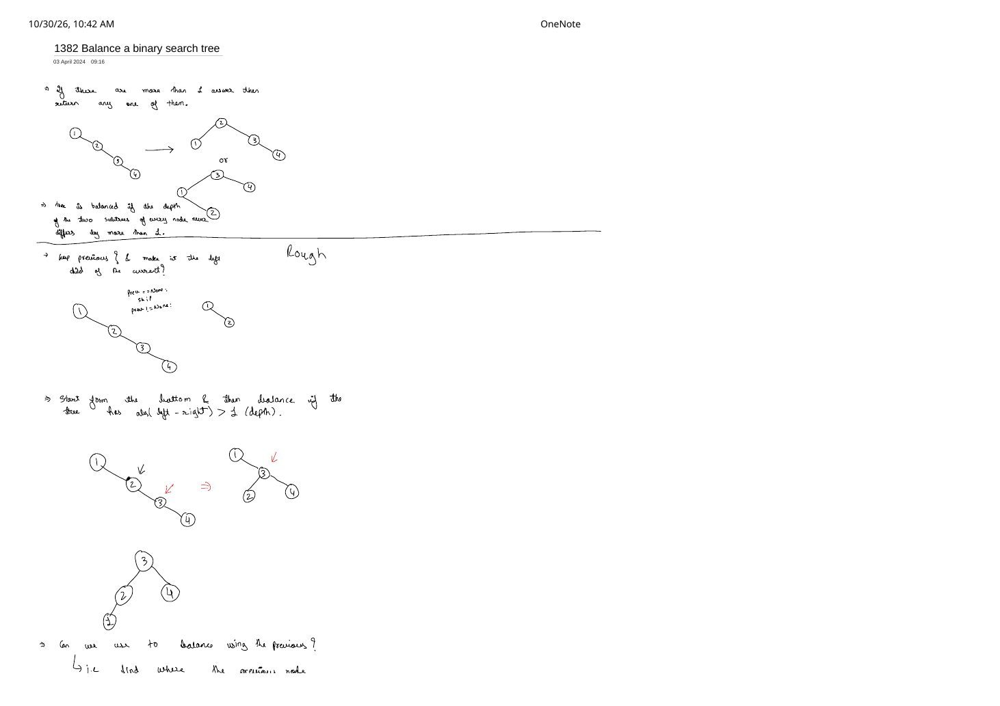
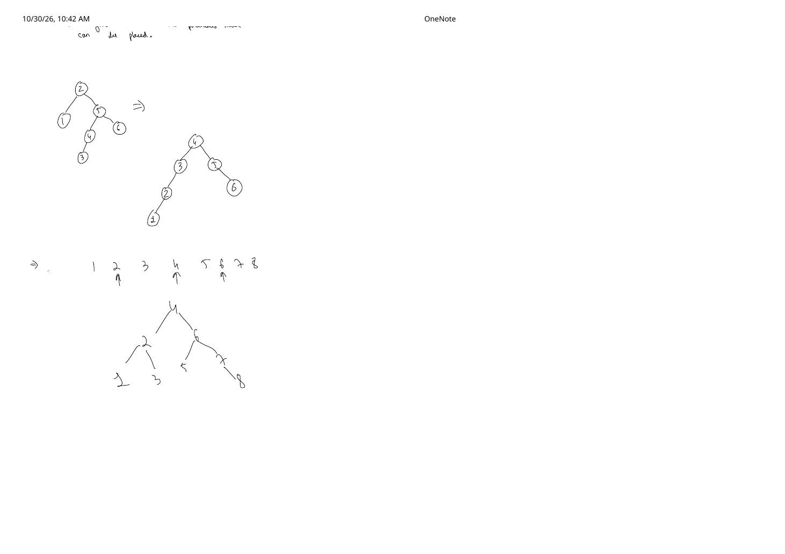

DFS on Trees, Iterative State Stacks & Balancing a BST (LC 1382)
Expanded from handwritten competitive coding study notes (02_DFS_Algorithm_Trees.pdf & 01_1382_Balance_a_binary_search_tree.pdf) · View original handwritten pages
Depth-First Search (DFS) plunges all the way down one branch to a leaf before backtracking to explore sibling branches. On trees—which are connected acyclic graphs—DFS needs no visited array when moving strictly from parent to children, making it the natural workhorse for root-to-leaf path accumulation, subtree height checks, and sorted BST serialization. These notes connect two complementary halves: mastering iterative vs. recursive tree DFS (including LIFO child-push ordering and state bundling on the stack), and applying inorder DFS + midpoint divide-and-conquer to rebuild an arbitrarily skewed Binary Search Tree into a height-balanced BST in $\mathcal{O}(N)$ time.
1. Iterative DFS Skeleton & The LIFO Push-Order Rule
Generic Iterative DFS Pseudocode
- Push the
rootonto an explicit stack $S$. - Pop the top (last) element of $S$ and process it as the current node.
- Push all unvisited children / neighbors of the current node onto $S$.
- Repeat steps 2–3 until $S$ is empty.
When converting recursive Preorder Traversal (Parent → Left → Right, or PLR, LeetCode 144) into an explicit stack loop, a classic bug is pushing left before right. Because a stack is Last-In, First-Out (LIFO), the order in which items pop is the exact reverse of the order in which they were pushed:
| Stack Push Sequence (Bottom $\to$ Top) | Pop / Execution Order | Verdict for Preorder (PLR) |
|---|---|---|
[ P | L | R ] |
R → L → P |
Reversed post-like order (incorrect) |
[ L | R | P ] (or process $P$, push $L$ then $R$) |
P → R → L |
Right subtree visited before Left (mirrored!) |
[ R | L | P ] (or process $P$, push $R$ first, then $L$) |
P → L → R |
Exact Preorder traversal |
right before left guarantees that 2 sits above 3 on the stack, yielding 1 - 2 - 4 - 5 - 3 - 6 - 7.// Iterative Preorder Traversal (LeetCode 144) — C++
vector<int> preorderTraversal(TreeNode* root) {
if (!root) return {};
vector<int> order;
stack<TreeNode*> st;
st.push(root);
while (!st.empty()) {
TreeNode* curr = st.top();
st.pop();
order.push_back(curr->val);
// Push RIGHT first so LEFT stays on top and pops next!
if (curr->right) st.push(curr->right);
if (curr->left) st.push(curr->left);
}
return order;
}2. Passing Top-Down State in Iterative DFS: Binary Tree Paths (LC 257)
In recursive DFS, passing top-down context from root to leaves—such as current depth, running path sum, or the path string itself—is effortless because each call frame on the call stack owns its own local parameters. How do we replicate this cleanly in an iterative DFS?
State-Bundling Principle on Explicit Stacks
Whenever recursive DFS passes top-down information via function arguments (dfs(node, path)), iterative DFS achieves the exact same isolation by pushing a tuple / pair [node, path] directly onto the explicit stack. Each stack entry freezes the path prefix up to that node without needing manual backtracking pops.
In LeetCode 257 (Binary Tree Paths), we return every root-to-leaf path formatted as "1->2->5". Compare the two implementations written side-by-side in the notes:
# 1. Recursive DFS with Argument Propagation (from handwritten notes)
class Solution:
def generateRootToLeafPath(self, root, currentPath, allPaths):
if not root:
return
if not root.left and not root.right:
allPaths.append(currentPath + [str(root.val)])
return
nextPath = currentPath + [str(root.val)]
self.generateRootToLeafPath(root.left, nextPath, allPaths)
self.generateRootToLeafPath(root.right, nextPath, allPaths)
def binaryTreePaths(self, root: Optional[TreeNode]) -> List[str]:
allPaths = []
self.generateRootToLeafPath(root, [], allPaths)
return ["->".join(path) for path in allPaths]# 2. Iterative Stack DFS Bundling [node, currentPath] (from handwritten notes)
class Solution:
def binaryTreePaths(self, root: Optional[TreeNode]) -> List[str]:
if not root:
return []
S = [(root, str(root.val))] # stack stores (node, path_so_far)
allPaths = []
while S:
currentNode, currentPath = S.pop()
if not currentNode.left and not currentNode.right:
allPaths.append(currentPath)
if currentNode.right:
S.append((currentNode.right, currentPath + "->" + str(currentNode.right.val)))
if currentNode.left:
S.append((currentNode.left, currentPath + "->" + str(currentNode.left.val)))
return allPathsIn C++, bundling pair<TreeNode*, string> on std::stack (or backtracking a single shared vector<int> in recursive DFS) gives the same clean structure:
// Iterative State-Bundled DFS in C++ (LeetCode 257)
vector<string> binaryTreePaths(TreeNode* root) {
if (!root) return {};
vector<string> ans;
stack<pair<TreeNode*, string>> st;
st.push({root, to_string(root->val)});
while (!st.empty()) {
auto [node, path] = st.top();
st.pop();
if (!node->left && !node->right) {
ans.push_back(path);
continue;
}
if (node->right)
st.push({node->right, path + "->" + to_string(node->right->val)});
if (node->left)
st.push({node->left, path + "->" + to_string(node->left->val)});
}
return ans;
}Practice Milestones Noted in the Study Sheet
- Core Traversals: Implement Preorder, Inorder, and Postorder both recursively and iteratively (LeetCode Tree Traversal Views Guide).
- Subtree Structural Checks: Maximum Depth of Binary Tree (LC 104), Same Tree (LC 100), Symmetric Tree (LC 101).
- Graph Extensions: LeetCode Graph Algorithms Practice List.
3. LeetCode 1382: Balance a Binary Search Tree
Problem Statement & Height-Balance Invariant
Given the root of a Binary Search Tree (BST), return a balanced BST containing the exact same node values (if multiple balanced BSTs exist, return any of them). A binary tree is height-balanced if for every node $u$ in the tree, the depths of its two subtrees never differ by more than $1$:
For example, given the right-skewed chain 1 → 2 → 3 → 4 ($\text{height} = 4$), both the tree rooted at 2 (left 1, right 3 → 4) and the tree rooted at 3 (left 1 → 2, right 4) satisfy $\lvert \text{left} - \text{right} \rvert \le 1$ everywhere and are accepted.
Why Ad-Hoc Pointer Re-Parenting Gets Messy ("Rough" Notes Analysis)
Before jumping to the optimal solution, the handwritten rough work tests two tempting in-place instincts and exposes where naive re-parenting breaks:
- Tracking
prevduring traversal and forcingprevas the left child ofcurr: Works for a 2-node step on a strictly right-skewed chain, but loses subtree invariants as height grows. - Bottom-up local fixing when $\lvert \text{depth}(L) - \text{depth}(R) \rvert > 1$: On
1 → 2 → 3 → 4, rotating locally at2yields1 → 3(with children2and4), and rotating again at root lifts3above2 → 1and4. However, on a general asymmetric BST—such as root2with left1and right subtree5(whose left is4 → 3and right is6)—naively pulling node4up to the root creates a left chain4 → 3 → 2 → 1of depth $3$ against a right chain5 → 6of depth $2$, leaving subtree3 → 2 → 1unbalanced unless you implement full AVL-tree single/double rotations (LL, RR, LR, RL) repeatedly!
Contest Takeaway: Don't Hand-Roll Full AVL Rotations for Static Rebuild!
AVL rotations are essential when supporting online dynamic insertions and deletions in $\mathcal{O}(\log N)$ per query. When all $N$ keys are already present statically in a BST, rebuilding from its sorted inorder sequence takes $\mathcal{O}(N)$ total time in ~20 bug-free lines of code.
Optimal $\mathcal{O}(N)$ Strategy: Sorted Inorder DFS + Midpoint Divide-and-Conquer
Every BST satisfies a fundamental structural property: an inorder DFS traversal (Left → Root → Right) visits all node values in strictly non-decreasing sorted order in $\mathcal{O}(N)$ time! Once we have the sorted array $A[0 \dots N-1]$—such as $[1, 2, 3, 4, 5, 6, 7, 8]$ on page 2 of the notes—how do we construct a guaranteed height-balanced BST?
- Pick the middle index $m = \lfloor (l + r) / 2 \rfloor$ as the root of the current subarray $A[l \dots r]$.
- Recursively build
root->leftfrom the left half $A[l \dots m - 1]$ (all strictly smaller elements). - Recursively build
root->rightfrom the right half $A[m + 1 \dots r]$ (all strictly larger elements).
01_1382_Balance_a_binary_search_tree.pdf: 4 splits $[1..8]$ into $[1,2,3]$ (root 2) and $[5,6,7,8]$ (root 6, right child 7 → 8). Every node's subtree heights differ by at most $1$.Why Midpoint Selection Guarantees Height Balance + Complexity
Splitting a subarray of length $k$ at $m = \lfloor (l + r)/2 \rfloor$ produces subarrays of sizes $\lfloor (k-1)/2 \rfloor$ and $\lceil (k-1)/2 \rceil$, which differ in size by at most $1$. By strong induction, every subtree of size $k$ gets height $\lfloor \log_2 k \rfloor + 1$, so for every node $\lvert \text{height}(L) - \text{height}(R) \rvert \le 1$.
- Time Complexity: $\mathcal{O}(N)$ for inorder traversal + $\mathcal{O}(N)$ to visit each array index once during reconstruction $= \mathcal{O}(N)$.
- Space Complexity: $\mathcal{O}(N)$ to store the sorted node pointers (reusing existing
TreeNode*objects avoids allocating new heap nodes!), plus $\mathcal{O}(\log N)$ recursion stack during rebuild ($\mathcal{O}(H)$ during initial inorder traversal). (Note: Day–Stout–Warren (DSW) achieves $\mathcal{O}(1)$ auxiliary space via vine-flattening + controlled left rotations, though inorder + midpoint is faster and cleaner in contests.)
// LeetCode 1382: Balance a Binary Search Tree — C++ (Reusing TreeNode pointers)
class Solution {
vector<TreeNode*> sortedNodes;
void inorder(TreeNode* node) {
if (!node) return;
inorder(node->left);
sortedNodes.push_back(node);
inorder(node->right);
}
TreeNode* buildBalanced(int l, int r) {
if (l > r) return nullptr;
int mid = l + (r - l) / 2;
TreeNode* root = sortedNodes[mid];
root->left = buildBalanced(l, mid - 1);
root->right = buildBalanced(mid + 1, r);
return root;
}
public:
TreeNode* balanceBST(TreeNode* root) {
sortedNodes.clear();
inorder(root);
return buildBalanced(0, (int)sortedNodes.size() - 1);
}
};# LeetCode 1382: Balance a Binary Search Tree — Python
class Solution:
def balanceBST(self, root: Optional[TreeNode]) -> Optional[TreeNode]:
nodes = []
def inorder(curr: Optional[TreeNode]) -> None:
if not curr:
return
inorder(curr.left)
nodes.append(curr)
inorder(curr.right)
def build(l: int, r: int) -> Optional[TreeNode]:
if l > r:
return None
mid = (l + r) // 2
node = nodes[mid]
node.left = build(l, mid - 1)
node.right = build(mid + 1, r)
return node
inorder(root)
return build(0, len(nodes) - 1)From the Handwritten Notes
Expand the original handwritten pages below to inspect the exact derivations, dry runs, and annotations:
View original note — DFS Algorithm on Trees, Preorder Push Order & LC 257 (Page 1)

PLR), study question bank, and recursive vs. iterative Python code for LC 257 Binary Tree Paths.View original note — DFS Algorithm on Trees (Page 2)

refinedAllPaths from LC 257 recursive DFS.View original note — LC 1382 Balance a Binary Search Tree: Problem & Rough Rotations (Page 1)


1 → 2 → 3 → 4 examples, height-balance definition, and rough exploration of bottom-up local re-parenting.View original note — LC 1382 Balance a Binary Search Tree: Counterexample & Sorted Midpoint Breakthrough (Page 2)


1..8 midpoint reconstruction.